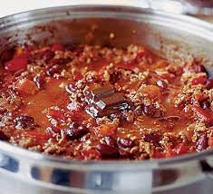

Chilli con carne

Description
A spicy stew containing chilli peppers, meat, tomatoes and kidney beans
Ingredients
- 2 tbsp olive oil
- 2 large onions, halved and sliced
- 3 large garlic cloves, chopped
- 2 tbsp mild chilli powder
- 2 tsp ground cumin
- 2 tsp dried oregano
- 1kg pack lean minced beef
- 400g can chopped tomato
- 2 beef stock cubes
- 2 large red peppers, deseeded and cut into chunks
- 10 sundried tomatoes
- 3 x 400g cans red kidney beans, drained
Steps
- Heat oven to 150C/fan 130C/gas 3
Heat the oil, preferably in a large flameproof casserole
Fry the onions for 8 mins
Add the garlic, spices and oregano and cook for 1 min
Gradually add the mince, stirring well until browned
Stir in the tomatoes, add half a can of water
Crumble in the stock and season
- Cover and cook in the oven for 30 mins
Stir in the peppers and sundried tomatoes
Cook for 30 mins more until the peppers are tender
Stir in the beans
- To serve, reheat on the hob until bubbling
Serve with avocado or a big salad with avocado in it
plus some basmati rice or tortilla chips
and a bowl of soured cream